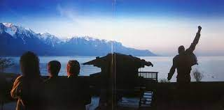

Made In Heaven
"Made In Heaven" este al cincisprezecelea și ultimul album de studio al trupei, remarcandu-se prin piese ca "I Was Born to Love You" si "Let Me Live". Albumul a aparut dupa moartea solistului Freddie Mercury, in 1991.
"Made In Heaven" este al cincisprezecelea și ultimul album de studio al trupei, remarcandu-se prin piese ca "I Was Born to Love You" si "Let Me Live". Albumul a aparut dupa moartea solistului Freddie Mercury, in 1991.